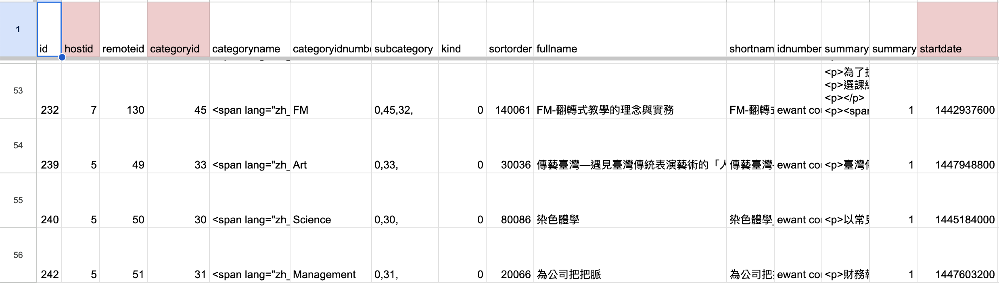
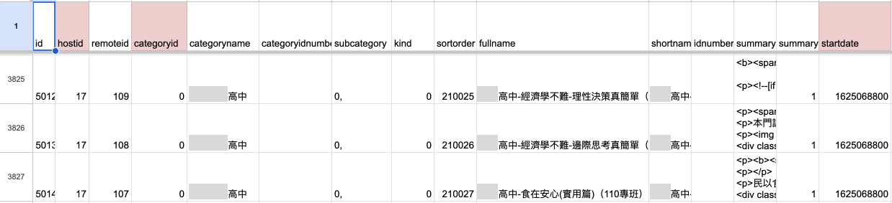
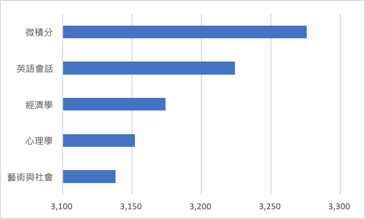
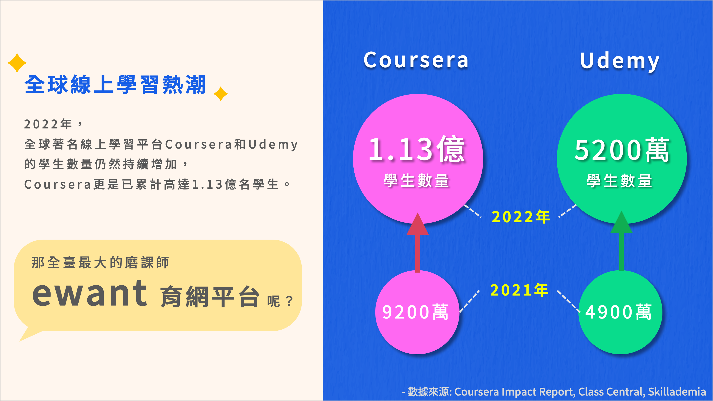
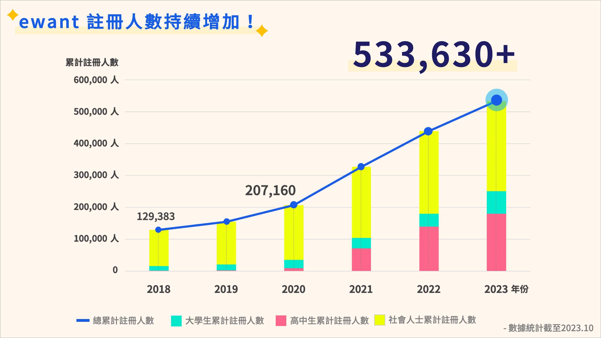
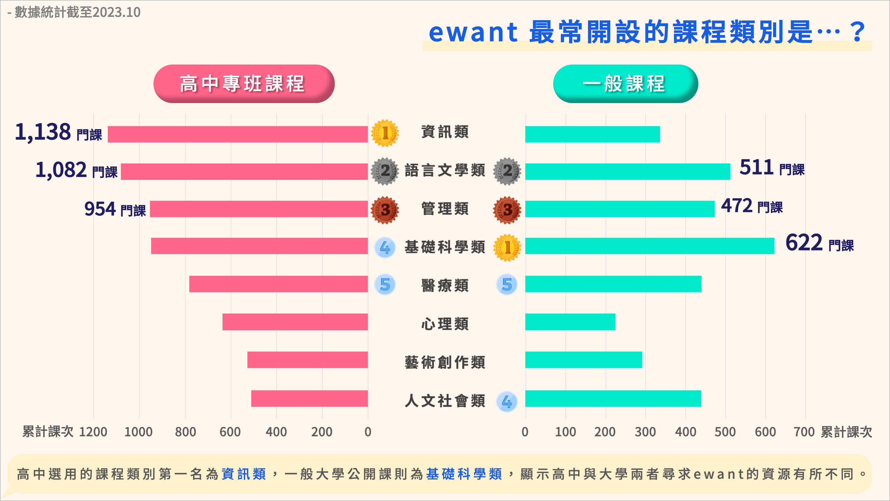
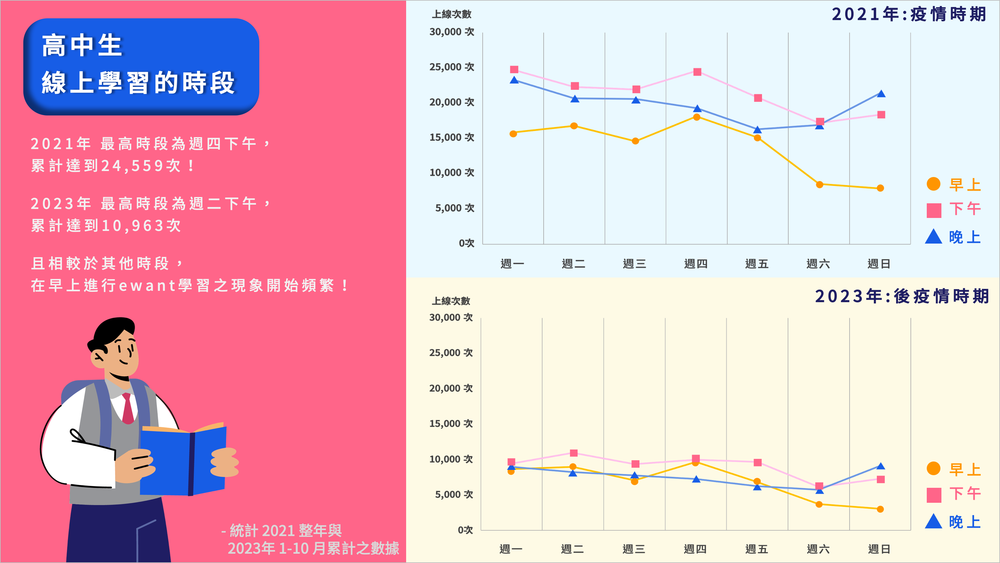

ewant學習平台數據分析 年報設計

首次接觸平台海量的數據
先附上Behance ewant年報作品連結： https://www.behance.net/gallery/197984693/ewant-2023
ewant是一個大規模開放線上學習平台，
身為學生，很難實際接觸到一個平台的後端數據，
很高興能待在交大，遇到很好的老師，願意給我機會接觸，滿滿感謝！
2023年9月中
「老師，是否有ewant實習工讀的機會可以讓我參與呢？」
開啟了ewant平台數據分析的開頭
其實最緊鑼密鼓的時期是2023年10月，一個月的期間，
因為老師希望可以在11月中的 EdTech Taiwan 2023 教育科技展 展出，達到宣傳的效果。
一個月的時間，其實很趕（冒汗
過程感謝工程師學長和學弟的協助（擦汗
整個過程大概如下：
確定目的與內容 > 查看資料，思考是否可執行 > 資料清洗 > 分析資料 > 視覺化和解讀 > 設計年報
花最多時間的排名大概是：
- 設計年報
- 資料清洗
- 視覺化和解讀
當我知道只有約一個月的時間時，就趕緊先在閒暇之餘思考設計的部分，
如果在最後才思考設計，那會非常非常來不及與煎熬，
我們大致的時間分配如下：
第一週：確定目的與內容+(閒暇之餘)思考設計
第二週：查看資料，思考是否可執行，無法的研究問題刪除+設計年報封面
第三週：資料清洗+分析資料
第四週：資料清洗+分析資料+視覺化和解讀+設計年報草稿
第五週：視覺化和解讀+設計年報
因為10月份真的是匆匆忙忙
11月與12月就是可以慢慢理解、消化、整理那些雜亂的數據or未觸碰到的資料數據了
那我就簡單的介紹一下2023年忙碌的10月份吧
確定目的內容與查看資料可行性
首先，確認好這份年報的目的為何？
雖然年報是一整年的表現統整，
如果只給單位內部掌握情況可能會迅速簡單一點，
但若要在EdTech Taiwan 2023 教育科技展上展出，
就需要考量到「哪些人會看」以及「希望他們看到什麼」
哪些人會看年報，影響到資料要如何分析以及要如何呈現，
為了在教育科技展展出，那我們必須知道參加教育科技展的人是哪些人，
而大部分的觀展者以學校老師、家長、學生佔多數，
在資料分析與呈現上自然要選擇大眾較容易理解的型態，
像是基本的逐年加總或累計（總不能像做研究一樣跑個什麼ANOVA分析吧
以及簡單的長條圖、折線圖、圓餅圖呈現（避免複雜的圖，像是桑基圖或河流圖等，不過也很難用到啦（笑
簡單直覺會是重點！
再來，希望他們看到什麼，這部份與學長學弟討論比較久，
一方面要考量到達到宣傳的目的，另一方面則是資料是否可以實現，
像是原本想探討學習者性別差異，但由於性別可能會比較有爭議，以及現實層面沒有性別的資料，只能刪除。
其實這個階段「資料數據」的影響力很大，
我們提出不少想呈現的內容，最終都是被「資料數據」給制止了（無資料 或是 時間考量）
但是，還是有不少問題經由絞盡腦汁而實現，
這部份留給下面一段簡單分享（擦汗擦汗
資料清洗
資料清洗是挑戰 是惡夢
這次真的體會到各式各樣的數據資料，
已超越我的碩士論文了（論文研究根本小巫見大巫吧）
因為資料真的很多+隱私等諸多問題，
這邊我就只分享其中一個問題解決：
「線上課程類別」
ewant開設了許多不同類別的課程，包含像是人文社會類、工程類、基礎科學類等共十四大類，
而ewant一般課程都是給所有社會大眾皆可參與的，
由於108課綱上路，也開始有與高中學校連結，開一些課程給特定高中學校。
我們想要了解：一般社會大眾與高中學校兩者之間所開設的課程類別是否有差異？
這問題其實很好解決，只要先把所有的開設課程分成「一般社會大眾」與「特定高中」，之後再統計個別的不同類別課程總共有多少即可。
是的，我起初也是這麼想的。
直到我看到資料就明白…嗯有些許麻煩。

上圖是我擷取資料檔案的一小部分，事實上欄位還有很多。
我們可以看到不論是在catagoryid、catagoryidnumber都可以看到課程分到哪一個類別。（有另一個檔案可對照catagoryid、catagoryidnumber）
但這只基於「一般社會大眾」的課程QQ

若是特定高中則會變成如上圖所示，
也就是說，平台後端並沒有將高中課程分門別類。
而fullname會在前面標示「某某高中」，後面才是課程名稱。
所以，我們必須先將資料整理！
我是先以shortname欄位將檔案資料分成「一般社會大眾」和「特定高中」課程，
然後從「一般社會大眾」整理一份課程對應類別的清單出來，
像是：
| 課程類別 | 課程名稱 |
|---|---|
| Science | 染色體學 |
| Art | 傳播台灣 |
| Management | 為公司把把脈 |
有些課程會每年都開，在課程名稱最後面會加年份或季，比方說：染色體學（2020年）、染色體學 春季班 等，這些也都會排除掉重複的課程，成為一個乾淨、不重複的課程對應類別的清單。
再來就是處理「特定高中」的部分，
將fullname「某某高中」的部份刪除，而後將fullname剩下的課名去match我所整理出的課程對應類別的清單的課程名稱，
將高中課程也進行分類。
做完上述所有的整理後，
才能進行統計分析！（擦擦汗
這過程都是用Python解決，
但難免會遇到一些特殊情況，比方說某個課程對應不到類別，這部份我就會手動處理（畢竟情況少數，人工處理也比較快
此外，
我們也有遇到需要使用Python爬蟲搜尋的困境，
但這部份就暫不分享了（苦笑
總之，
資料格式百百種，得先釐清每個欄位資料的意思，觀察檔案資料，而後再來思考有什麼解決處理方式。
分析資料與視覺化解讀
分析資料的部份，大多都是以加總、累計、百分比呈現，
如同我第一段所述，主要是給觀展的一般民眾所觀看，不需要使用到太複雜的統計分析方式。
分析完後的解讀，我是直接視覺化呈現再來解讀，
一方面是可以順便思考要設計如何的視覺化呈現比較妥當，
另一方面是比起表格式還要一一對照數據，直接視覺化呈現資料比較一目了然，
比方說下面的表格（僅舉例，數據為虛構的）：
| 課程名稱 | 報名人數 |
|---|---|
| 微積分 | 3276 |
| 英語會話 | 3224 |
| 經濟學 | 3174 |
| 心理學 | 3152 |
| 藝術與社會 | 3138 |
雖然已經由大至小排列，但用肉眼看數據較難馬上判斷彼此之間的差距。

但如果我們轉換成如上圖所示的橫條圖，可以較明顯看出彼此之間的差距。
BUT，光是將資料視覺化這樣是不夠的
首先，要讓這些數據有故事。
只有數據，得知微積分比較多人報名上課，然後呢？而且為什麼呢？
或許是學生認為微積分很重要，所以很多人報名？還是說很多人是被當又再次重修？
當然如果要確認是否是「學生認為微積分很重要，所以報名」這一論點，可能需要受訪者或問卷調查等方式來佐證，
或是我們只能提說這是我們的猜測（但聽起來就很沒有說服力了）
而「很多人是被當又再次重修」可以再從其他的資料檔案來分析佐證。
不論如何，上述都只是虛構的，而我想說明的是
必須給這些數據一些內容，否則它只是數字而已。
關於給予內容故事的部份，這過程跟老師、學長、學弟也是討論許多次，
彼此說出對數據的觀點，互相交流想法和硬證，得出結果。
BUT，光是這樣也還不夠
只有呆板的圖和文字，沒有吸引力
得把資料視覺化與內容弄得美麗一點，才會有閱覽的動力XDDD
最終呈現
ewant 2023年報 最終成果我放在Behance上面
連結在此：https://www.behance.net/gallery/197984693/ewant-2023
有興趣可以點擊閱覽～～
這邊我就簡單放幾張XDD
畢竟我不是設計系的，沒有說設計的多麼好看（苦笑
但在緊湊的時間內，最終還是盡力完成了（擦汗
設計的腦力激盪又與上述的數據分析很不同，有機會再來分享XD
 像是上圖就沒有用到平台資料分析，而是引用其他來源數據，再以視覺化呈現。
 上圖是累計的註冊人數，可以看出每年增加的幅度，也可看出不同身分的註冊者所佔的比例。
 這張圖就是上述所提的課程類別分析，在橫條比較圖最下面我們也給數據內容，引導觀眾得知這張圖的用意和思考方向（高中與大學兩者尋求的資源是有所不同的）

這張圖也滿有意思的，是在探討疫情發燒時期與後疫情時期，高中生使用ewant的時段比較。
這張圖的數據其實很很很龐大（汗流浹背
我們是以登入的時間來統計，
龐大的登入次數、分成高中生與非高中生、unix時間要轉換、分時段、計算人數，
也滿折磨電腦的運作（電腦跑呀跑 我們顫抖的等呀等）
心得
過程雖然很緊湊，不少熬夜趕工的日子，
但其實也滿享受在思考如何解決數據的問題，
也很喜歡與他人一起討論資料、解讀數據、分享彼此看法的過程，
雖然只是一份看似簡單的年報，但其實背後的歷程滿不容易的（但時間魔王影響佔較多XD
展覽之後也思考說是否有更簡單的方式來解決問題，
當然 有XDD
難免就會冒出：啊我當初怎麼那麼傻，這樣做就好了啊 的想法
但至少從這些經驗得出解決方式，如果再次碰到相似的問題，就可以快速迎刃而解。
不少問題也尚未分析和未得到答案也是很可惜。
不論如何，展覽順利展出，過程緊湊但收穫滿滿，感謝幫忙的老師夥伴們，這是段很棒的經驗！🤩